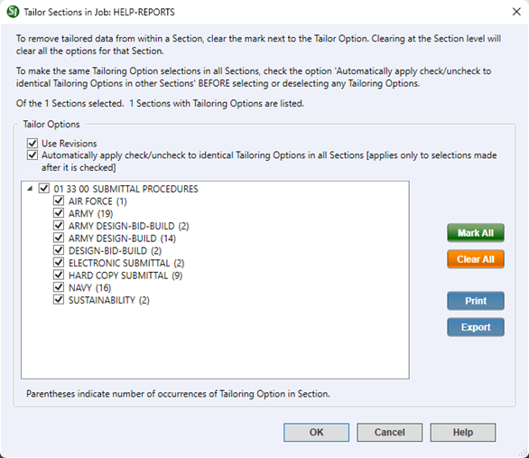

This command can also be executed from the SpecsIntact Explorer's Right-click menu.
The Tailor command is designed to identify Tailoring Options within the selected Sections. This function facilitates the pre-editing of a Section by an agency, project method, or products, enabling the inclusion (checked) or exclusion (unchecked) of requirements. The Tailor Sections window will exclusively display Sections containing Tailoring Options, which are selected by default. A check signifies the presence of Tailoring Options within that Section. To remove these options, uncheck the checkbox beside it. Any Sections remaining checked will retain their Tailoring Options in the text.
 The UFGS Master is tailored by agency (Army, Navy, and Air Force), so it is important to tailor the Section(s) when the Job or Master is created or a new Section is added by removing the non-applicable agencies and project method. Using the Tailor command on a Section post-editing is not recommended, as it carries the risk of overwriting or eliminating existing alterations.
The UFGS Master is tailored by agency (Army, Navy, and Air Force), so it is important to tailor the Section(s) when the Job or Master is created or a new Section is added by removing the non-applicable agencies and project method. Using the Tailor command on a Section post-editing is not recommended, as it carries the risk of overwriting or eliminating existing alterations.

- Tailor Options - Provides the option to efficiently manage your tailoring choices. You can redline any Tailoring Options you select for removal, and/or apply these choices simultaneously to all Sections within the Job or local Master, eliminating the need for repetitive selections.
- Use Revisions - When activated, any unchecked Tailoring Options will be redlined and then hidden, streamlining your view in the SI Editor. You can manage this option within your Job or local Master's settings by navigating to the File menu > Properties > Options tab. The Revisions option is enabled for a Job and disabled for a Master.
- Automatically apply check/uncheck to identical Tailoring Options in all Sections [applies only to selections made after it is checked] - Applies the Tailoring Option selections (deselected) made for one Section to all other Sections. This functionality optimizes efficiency by eliminating the need for redundant manual selections.
- List - Displays the Tailoring Options organized by Section, with the number of occurrences shown in parentheses. From this list, you can select or deselect individual options simultaneously as needed to tailor your project.
- Mark All button - Selects every Section and Tailoring Option displayed in the Tailoring Options list with a single click.
- Clear All button - Deselects all the Sections and Tailoring Options displayed in the list with a single click.
- Print button - Opens the Print window, allowing you to print the Tailoring Options for each Section, including how many times each option appears.
- Export button - Opens the Export Tailoring Options window, providing options to create a web file, spreadsheet file, or a comma-delimited file. Exporting this list provides a convenient way to preview and select which Tailoring Options to exclude from the Job, Master, or specific Sections.
How To Use This Feature
 to Tailor One or More Sections:
to Tailor One or More Sections:
- In the SpecsIntact Explorer, select a Job or Master
- In the Contents panel, perform one of the following:
- Select a Section
- Press-and-hold the Shift key to select multiple consecutive Sections
- Press-and-hold the Ctrl key to select multiple non-consecutive Sections
- Once the Section(s) are highlighted, perform one of the following:
- Right-click and select Tailor
- Select the Sections menu and select Tailor
- Below Tailor Options, perform one of the following:
- Leave the default options
- Select Use Revisions
- Select Automatically apply check/uncheck to identical Tailoring Options in all Sections [applies only to selections made after it is checked]
- In the list below, uncheck the Tailoring Options you want to remove
- Click OK
Users are encouraged to visit the SpecsIntact Website's Support & Help Center for access to all of our User Tools, including Web-Based Help (containing Troubleshooting, Frequently Asked Questions (FAQs), Technical Notes, and Known Problems), eLearning Modules (video tutorials), and printable Guides.